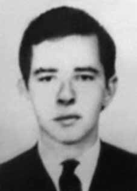

Pedro
Alexandrino
Oliveira
Filho
CIRCUNSTÂNCIAS DA MORTE
No Relatório Arroyo consta que Peri estava próximo ao acampamento da comissão militar da guerrilha quando houve o tiroteio do dia 25 de dezembro de 1973. Ele e Áurea Eliza Pereira haviam se deslocado para encontrar Vandick Reidner Pereira Coqueiro e Dinaelza Santana Coqueiro. As indicações de Ângelo Arroyo revelam que Pedro Alexandrino sobrevivera ao episódio que ficou conhecido como o “Chafurdo de Natal”. As informações referentes às circunstâncias da morte de Pedro Alexandrino são escassas. Conforme o relatório do Ministério da Marinha, de 1993, iv ele foi morto em 4 de agosto de 1974. A mesma data de morte é referida no Relatório do CIE, que o relaciona como um dos participantes da Guerrilha do Araguaia. v Em contrapartida, a certidão de óbito presente no processo da CEMDP traz como data de morte o dia 10 de março de 1974. Em reportagem da revista Época, de março de 2004, os ex-soldados Raimundo Pereira, Josean Soares, Antônio Fonseca e Elias Oliveira relataram que Pedro Alexandrino foi enterrado na base militar de Xambioá (TO). De acordo com a reportagem: Dois corpos cravados de balas foram despejados na pista. Sem camisa, vestiam bermudas jeans desfiadas, presas com cintos de couro. Um deles estava descalço, o outro usava tênis Topa Tudo. Foram chutados pelos militares. Um soldado pegou o facão e abriu um buraco no peito de um dos mortos. ”Tem gordura aí”, zombou. O cadáver com o peito aberto a facão era do guerrilheiro Peri, de 27 anos, disfarce do bancário Pedro Alexandrino OliveiraFilho. O outro era de Batista, um dos poucos camponeses que os membros do PCdoB conseguiram cooptar para a luta. Os dois não foram mortos juntos. Batista, conforme relatos de agricultores da região, foi preso com a guerrilheira Áurea perto da casa de uma camponesa amiga. O soldado Antônio Fonseca e um colega foram escalados para sepultar os corpos numa cova dentro da base. “Eles já estavam duros”, conta. Fonseca pegou Peri pelos cabelos, levantou-o e jogouo nas costas. O colega fez o mesmo com Batista. Ambos foram largados no mesmo buraco, um por cima do outro. Para cobrir os corpos foi usado um pano com listras vermelhas e brancas. Um camponês que estava preso na base encheu a cova de terra. No livro do jornalista Leonencio Nossa, Mata! O Major Curió e as guerrilhas no Araguaia, afirma-se que “Paraquedistas o encontraram na selva. O guerrilheiro mineiro foi executado com tiro na cabeça. O tenente-coronel Léo Frederico Cinelli, que tudo anotava naqueles dias finais de combate, nada publicou sobre a morte do jovem de 27 anos, companheiro de Tuca”.
The Arroyo Report states that Peri was close to the camp of the guerrilla military commission when the shooting took place on December 25, 1973. He and Áurea Eliza Pereira had gone to meet Vandick Reidner Pereira Coqueiro and Dinaelza Santana Coqueiro. Ângelo Arroyo's indications reveal that Pedro Alexandrino had survived the episode that became known as the “Christmas Wallowing”. Information regarding the circumstances of Pedro Alexandrino's death is scarce. According to the 1993 Ministry of the Navy report, he was killed on August 4, 1974. The same date of death is mentioned in the CIE Report, which lists him as one of the participants in the Araguaia Guerrilla. v On the other hand, the death certificate present in the CEMDP process lists March 10, 1974 as the date of death. In a report in Época magazine, in March 2004, former soldiers Raimundo Pereira, Josean Soares, Antônio Fonseca and Elias Oliveira reported that Pedro Alexandrino was buried at the military base in Xambioá (TO). According to the report: Two bodies riddled with bullets were dumped on the runway. Shirtless, they wore frayed denim shorts, held up with leather belts. One of them was barefoot, the other was wearing Topa Tudo sneakers. They were kicked by the military. A soldier took the machete and opened a hole in the chest of one of the dead. “There’s fat there,” he scoffed. The corpse with its chest opened with a machete was that of the 27-year-old guerrilla Peri, disguised as banker Pedro Alexandrino OliveiraFilho. The other was from Batista, one of the few peasants that PCdoB members managed to co-opt into the fight. The two were not killed together. Batista, according to reports from farmers in the region, was arrested with the Áurea guerrilla group near the house of a friendly peasant woman. Soldier Antônio Fonseca and a colleague were assigned to bury the bodies in a grave inside the base. “They were already hard,” he says. Fonseca grabbed Peri by the hair, lifted him up and threw him on his back. The colleague did the same to Batista. Both were dropped into the same hole, one on top of the other. To cover the bodies, a cloth with red and white stripes was used. A peasant who was trapped at the base filled the pit with earth. In the book by journalist Leonencio Nossa, Mata! Major Curió and the guerrillas in Araguaia, it is stated that "Paratroopers found him in the jungle. The guerrilla from Minas Gerais was executed with a shot to the head. Lieutenant-Colonel Léo Frederico Cinelli, who wrote down everything in those final days of combat, published nothing about the death of the 27-year-old young man, Tuca's companion."
El Informe Arroyo señala que Peri se encontraba cerca del campamento de la comisión militar guerrillera cuando se produjo el tiroteo el 25 de diciembre de 1973. Él y Áurea Eliza Pereira habían ido a encontrarse con Vandick Reidner Pereira Coqueiro y Dinaelza Santana Coqueiro. Los indicios de Ângelo Arroyo revelan que Pedro Alexandrino había sobrevivido al episodio que se conoció como el “Revuelco de Navidad”. La información sobre las circunstancias de la muerte de Pedro Alexandrino es escasa. Según el informe del Ministerio de Marina de 1993, fue asesinado el 4 de agosto de 1974. La misma fecha de muerte se menciona en el Informe de la CIE, que lo cataloga como uno de los participantes de la Guerrilla de Araguaia. v Por otro lado, el certificado de defunción presente en el proceso del CEMDP señala como fecha de defunción el 10 de marzo de 1974. En un reportaje de la revista Época, en marzo de 2004, los ex militares Raimundo Pereira, Josean Soares, Antônio Fonseca y Elias Oliveira informaron que Pedro Alexandrino fue enterrado en la base militar de Xambioá (TO). Según el informe: Dos cadáveres acribillados a balazos fueron arrojados en la pista. Sin camisa, vestían pantalones cortos de mezclilla deshilachados, sujetos con cinturones de cuero. Uno de ellos estaba descalzo, el otro calzaba zapatillas Topa Tudo. Los militares los patearon. Un soldado tomó el machete y abrió un agujero en el pecho de uno de los muertos. "Hay grasa allí", se burló. El cadáver con el pecho abierto con un machete era el del guerrillero Peri, de 27 años, disfrazado de banquero Pedro Alexandrino OliveiraFilho. El otro era de Batista, uno de los pocos campesinos que los miembros del PCdoB lograron cooptar a la lucha. Los dos no fueron asesinados juntos. Batista, según informes de agricultores de la región, fue detenido con el grupo guerrillero Áurea cerca de la casa de una amiga campesina. El soldado Antônio Fonseca y un colega fueron asignados a enterrar los cuerpos en una tumba dentro de la base. “Ya eran difíciles”, afirma. Fonseca agarró a Peri por el pelo, lo levantó y lo tiró de espaldas. El colega le hizo lo mismo a Batista. Ambos fueron arrojados al mismo hoyo, uno encima del otro. Para cubrir los cuerpos se utilizó una tela con rayas rojas y blancas. Un campesino que quedó atrapado en la base llenó el pozo con tierra. En el libro del periodista Leonencio Nossa, ¡Mata! Mayor Curió y la guerrilla en Araguaia, se afirma que "Paracaidistas lo encontraron en la selva. El guerrillero de Minas Gerais fue ejecutado de un tiro en la cabeza. El teniente coronel Léo Frederico Cinelli, que anotó todo en esos últimos días de combate, no publicó nada sobre la muerte del joven de 27 años, compañero de Tuca".